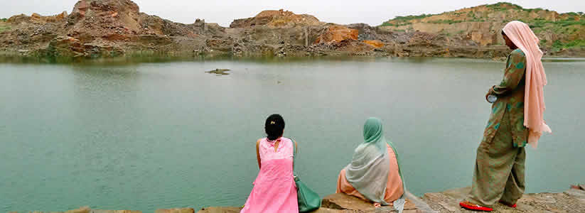

Trip Overview
India Untravelled invites you on a most exclusive discovery of India’s capital city, Delhi. 5,000 years of history are waiting to be unearthed, and mouth-watering food is everywhere; this is the part you probably know. But did you know that the city also houses an extremely talented village of potters? And clusters of mountain lakes whose tranquility can easily be mistaken for mighty Himalayan lakes? And that the Yamuna can be witnessed at the cleanest right here in Delhi?
Live with a local family at a homestay in South Delhi, with comfortable air-conditioned rooms, attached bathrooms, and (sometimes necessary) comforts such as free Wifi and satellite TV J From this base, explore the city for 4 days, seeing it as you would never have otherwise. Leave behind your pre-conceived notions of Delhi, and we are sure that the hidden gems in the city will impress you.
Please email us at untravel@indiauntravelled.com to plan and book your travels.
Trip Highlights
- Wake up with chai and a view of the Qutab Minar from your terrace, drive to the majestic Lotus Temple at sunset, and walk to the Delhi Metro for DIY Delhi explorations.
- Take in a glimpse of life in rural India one morning and try your own hand at pottery
- Hike amid the Aravalis to lakes so pristine, you forget that you’re in India’s capital city
- Delve deeper into the life and times of the Tibetan people at Delhi’s Little Tibet region
- Let the forgotten crafts of East Delhi amaze you
- Indulge your taste buds on a food walk through Old Delhi
- If your dates of travel allow it, soak in a true-blue Delhi experience on a Thursday evening at the Nizzamuddin Durgah
Please email us at untravel@indiauntravelled.com to plan and book your travels.
Brief Itinerary
Day 1
Take it slow on your first day, and give yourself time to adapt to the chaos and contrasts of the city. Walk up to your terrace for a view of the Qutab Minar, lounge with fellow travellers in the common dining area, and pamper your taste buds with delicious home-cooked Indian meals. You can use the day to go visit places in Delhi you’ve heard about and always wanted to see, or set out on an unplanned mini excursion on the Delhi Metro, which connects most parts of the city.
Day 2
After a leisurely mid-morning breakfast, set out on your first guided trip. Visit homes in a pottery village located on the outskirts of Delhi to see local potters spin magic on their wheel – from miniature collectibles to life-size figurines – and let their talent amaze you. Learn about their life and culture, and the basics of pottery. Try your hand at the wheel, and make yourself your own Delhi souvenir to take home! Spend the afternoon and evening on your own, exploring the walled city of Old Delhi or soaking in the colonial charm of Lutyen’s Delhi.
Day 3
In the evening, your third guided trip will find you travelling by vikram (bigger, shared version of the tuk-tuk) to a village on the outskirts of Delhi. Hike in the Aravalli hills to a cluster of five pristine mountain lakes, undoubtedly one of Delhi’s best kept secrets!
Day 4
On your last day in Delhi, depending on the time of your departure/further plans, you could shop in one of the city’s many street markets, go café hopping at Delhi’s urban villages, or unearth more of Delhi’s history at its UNESCO World Heritage Sites. Rest assured there will be much left to discover, and many reasons to come back!
OPTIONAL:
Visit Little Tibet, a settlement of 350 Tibetan families, in North Delhi, on your second guided trip. Stroll along its narrow by-lanes to meet craftsmen stitching thangkas, goldsmiths making Tibetan jewellery, and small shops selling traditional Tibetan souvenirs; it's a whole other world other there! Sample some Tibetan momos or thukpa at the end of your tour.
Please email us at untravel@indiauntravelled.com to plan and book your travels.
Location:
The homestay is located in a residential neighborhood in South Delhi. The trail takes you to Old Delhi and the outskirts of the capital city.
Best time to visit
- September to March
- Winter (November to March): Cool days, cold nights.
- Monsoon (July – August): Heavy downpours, spectacular greenery and sunsets.
- Summer (April to June): Hot and humid.
Things to note
- Fitness: The homestay is a perfect getaway for people of all ages and fitness levels – you can make your stay as relaxing or as active as you like.
- Cash and ATMs: Only cash is accepted at the homestay and for guided actvities. ATMs are located at a 3-minute walk from the homestay.
- Bathrooms: Each room comes with an attached bathroom, running hot water and western style toilets.
- Electricity: Power cuts are infrequent, but please be prepared for them by carrying torches and spare batteries as needed.
- Phone, Internet and TV: There are no TVs in the rooms, but plenty of interaction with the host family and fellow travellers. Phone networks work well and free Wifi is available in the house.
- Pets: Not allowed.
- Alcohol: Not provided. Restaurants are located a short walk away.
Checklist
Leave your pre-conceived notions behind, travel with an open mind, and you'll be pleasantly surprised with what you find.
- Sunscreen, sunhat in summer
- Walking shoes
- Warm jackets and layers if travelling in winter
- Umbrella, raincoat in the rainy season
- Insect repellant if you are prone to mosquito bites
- Books to read and write, stationery to paint and draw - anything you love to do and never get the time for
- Binoculars for bird watching
- Cosmetics you need
- Prescription medicines, if any
- Camera and batteries / charger
Please email us at untravel@indiauntravelled.com to plan and book your travels.
Gallery
Delhi Homestay
 Common Lounge
Common Lounge Rooms at the homestay
Rooms at the homestay Rooms at the homestay
Rooms at the homestay Rooms at the homestay
Rooms at the homestay Common area with a computer to use
Common area with a computer to use Sitting area to meet fellow travellers
Sitting area to meet fellow travellers Bathrooms with urban comforts
Bathrooms with urban comforts


Guided Trip Pottery Village
 A glimpse of the potters backyard
A glimpse of the potters backyard A hands-on lesson in pottery
A hands-on lesson in pottery A woman working on the clay
A woman working on the clay Buying souvenirs directly from the potters
Buying souvenirs directly from the potters Count your marbles. Photo by himanshu
Count your marbles. Photo by himanshu It takes a genius to make such lifesize sculptures
It takes a genius to make such lifesize sculptures Keeping homes cool with potted walls. Photo by Himanshu Shekhar Mishra
Keeping homes cool with potted walls. Photo by Himanshu Shekhar Mishra Lifesize sculptures. Photo by Himanshu Shekhar Mishra
Lifesize sculptures. Photo by Himanshu Shekhar Mishra Miniature pottery artist
Miniature pottery artist Pots drying out in the sun
Pots drying out in the sun Pottery walls to keep the homes cool
Pottery walls to keep the homes cool Rural India adapts to urban demands!
Rural India adapts to urban demands! Try your hand at pottery
Try your hand at pottery Where there are kids, there is cricket
Where there are kids, there is cricket


Guided Trip Sunset Hike in the Aravalis
 Charpoys made of recycled wrappers
Charpoys made of recycled wrappers Cycling at Sirohi
Cycling at Sirohi Enjoying a traditional meal
Enjoying a traditional meal First glimpse of the lake
First glimpse of the lake Gems wrappers woven into a colorful charpoy
Gems wrappers woven into a colorful charpoy Happy to untravel Delhi
Happy to untravel Delhi Herding goats
Herding goats Hiking amid the Aravalis
Hiking amid the Aravalis Hues of the lake at sunset
Hues of the lake at sunset.jpg) Its just Delhi, not the fjords ;)
Its just Delhi, not the fjords ;) Lounging in the sun
Lounging in the sun Soaking in the serenity
Soaking in the serenity Try your hand at cooking
Try your hand at cooking


.jpg)


Please email us at untravel@indiauntravelled.com to plan and book your travels.
Reviews
"It would be very cliche If I say the Delhi trip was awesome!
The stay:
Thanks a lot for introducing the home stay! Fantastic people with great hospitality. Sanjeev - O what a spirit he has! We did not have a dull moment thru out our stay there! And, the Dadi ma is really an inspiration to us. Breakfasts times with Dadima and aroma of aloo paratha are still rewinding in our memories.
They really surprised us On my daughter's Birthday!! On that day, we were leaving to Agra early morning. And, by 5 O clock, Sanjeev knocked our room door and wished my daughter with cake! My daughter is super thrilled and we too!
There was a Birthday card signed by whole family! What a way to celebrate Bday! I should say, my daughter is so lucky! Sanjeev was very helpful always! we have disturbed him at odd hours (like 11 PM) to clarify the route to the taxi driver.
The pottery tour:
We are happy that we took this tour! We are cherishing the memories of roaming in potters village. We feel that the time we spent is worthy and useful! What an insight we got! Since it was pre-Diwali season, We could smell the fresh diyas on making. It was such a delight to sight the hundreds of Diyas spread out!
Piyush is excellent and full of Josh, taking us into potter's homes and look into their works. We roamed on the streets, stopped to look at the potter's houses - walls made up with pots and mud! Saw them making pots, diyas, pot lids etc. Witnessed the raw mud being filtered, soaked and finally going into the potter's hands! Finally, we tried our hands too! Nice experience!
Our wishes to Piyush! Thanks for suggesting this tour to us!
We still talk about Pottery tour to our friends here (who ask abt our Delhi trip) and they are very eager to sign up when they travel to Delhi.
The Sunset hike:
Very adventurous and thrilling indeed! Since we got delayed, we could not do the usual hiking as they do! But, Had a nice time. In some areas I feel it is really risky - esp for senior citizens and kids. We could mingle with the locals and know the culture. As part of the package, they were generous to offer us dinner, which was yummy. One hour ride from the Metro station to the village was tiresome - in open share auto on bumpy road!
Overall:
We are happy happy happy, exploring Delhi thru IU. Your tips and suggestions were very very useful and saved a lot of time and money! As you suggested, we used Metro mostly which was fast and convenient, esp saved us from pollution!
We felt safe and peaceful at the homestay.
This trip has changed my thinking on North India and I started looking into other destinations of IU. From the stay, exploring the monuments/city - everything went on so good and pleasant! Wishing you all success!
"
~ Sandana, travelled with her mother and daughter in October 2013.
To feature your reviews about this trip, please email them to untravel@indiauntravelled.com
Please email us at untravel@indiauntravelled.com to plan and book your travels.
Responsible Travel
We recommend taking public transport during your stay in Delhi, to ensure that both your carbon footprint and costs remain low; the Delhi Metro connects most nooks and crannies of Delhi that you’d like to see.
How this trip makes a difference:
- The accommodation offered on this trail is a family-run homestay, giving you a chance to interact closely with your hosts and understand the culture and traditions of the region.
- The guided trip to Pottery Village on day 2 directly benefits nine village families, and a part of the revenue is channeled to a village development fund for the overall development of the local community.
- The guided trip to Little Tibet on day 3 is offered in collaboration with the Tibetan Youth Congress, to help preserve Tibet’s unique art, culture and traditions.
- The Pottery Village and Little Tibet trips give you the chance to interact with the local craftsmen, and buy souvenirs directly from them.
- The sunset walk in the pristine lakes of Delhi is organized in collaboration with an organization working to develop clean technology, handicrafts, and sustainable income sources within the village, which was hit by the mining ban in the region. The walk directly contributes revenue to village families involved in facilitating it, and indirectly to the upliftment of the entire community.
- The revenues generated from this trail are reinvested to further the cause of responsible travel in the region and in India.
How you can make a difference on this trip:
- While staying in the homestay, take the time to interact with your hosts and think of yourself as a guest at a family home. Please don’t expect room service!
- Carry a good water bottle and ask to refill drinking water at the homestays. Refrain from buying numerous plastic mineral water bottles.
- Pack your bags with environmentally friendly things. Carry as little plastic as possible.
- What you wear has an impact – dress appropriately, especially when visiting the villages on the outskirts of Delhi.
- Respect the local culture and refrain from physical intimacy in public places.
- Local food is great. Try it as much as possible and avoid packaged food. Ask for modifications in the food according to your taste, instead of wasting it.
- Avoid excessive consumption of alcohol and refrain from drugs, especially in public places.
- Seek permission before photographing people, so their privacy is respected.
- Do not pluck any medicinal plants and flowers, and do not disturb the wildlife.
Please email us at untravel@indiauntravelled.com to plan and book your travels.
Please email us at untravel@indiauntravelled.com to plan and book your travels.